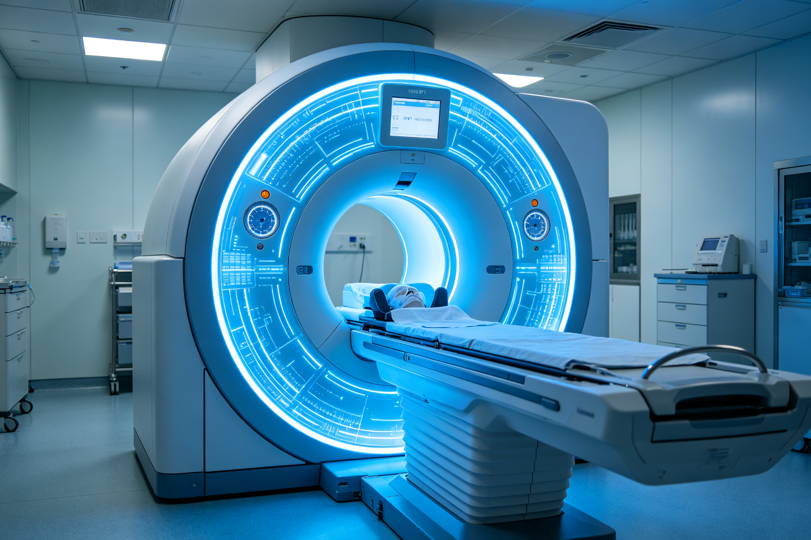
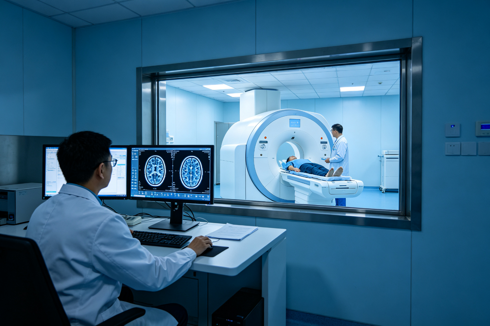

Innovations in Digital PET Theory Win World Intellectual Property Organization Global Award
On July 19, the World Intellectual Property Organization (WIPO) held a ceremony at its headquarters in Geneva, Switzerland to award the global prize for small and medium-sized enterprises. The RapiRange company, which is part of the digital PET industrial transformation team, received this honor, becoming one of only five winners globally.
The WIPO established the 'Global Award' to commend outstanding companies that have promoted global progress through intellectual property rights. Chen Fang, a key member of the digital PET industry team, stated at the award ceremony that the team's development has benefited from China's recent emphasis on supporting small and medium-sized enterprises, encouraging innovation among them, and respecting intellectual property achievements in the market environment. In the future, the team will strive to apply MVT technology to more fields, continuously outputting innovative technologies and products to the world.
One: A 'Small' Company Wins a 'Big' Honor Thanks to Innovations Based on MVT Method
As the industrialization team of digital PET, RapiRange is truly a 'small' company. Chen Fang joked, 'After 13 years of entrepreneurship, the company has gone through several ups and downs, with only around 20 fixed employees now.' The fact that a small company can win such a big honor truly demonstrates the enormous technological potential generated by innovations based on the MVT method.

In 2004, Professor Xie Qingguo invented the MVT method at Huazhong University of Science and Technology. This was the first time internationally that the concept of 'full digital PET' was proposed. The method is characterized by two essential features: 'full digitalization' and 'precise sampling.' It eliminates analog circuits while achieving precise digitalization from the source, solving the world's challenge of accurately sampling ultra-high-speed pulses.
With continuous support from national science and technology management departments such as the National Natural Science Foundation of China (NSFC), Ministry of Science and Technology, and Ministry of Education, along with local governments in Suzhou, Ezhou, Hefei, etc., digital PET imaging technology based on the MVT method quickly entered the industrialization process. The team subsequently successfully developed the world's first full-digital PET for animals and clinical use, bringing PET from an analog-digital hybrid era into a high-definition, precise quantitative digital age.
- In 2004, Professor Xie Qingguo invented the MVT method and proposed the concept of 'full digital PET';
- In 2010, the world's first digital PET scientific instrument was launched;
- In August 2015, the world's first clinical full-digital PET device was unveiled;
- In 2019, the first clinical full digital PET received approval from China's medical device registration authority;
- In 2020, the clinical full digital PET was put into clinical use at Ezhou Central Hospital;
- In 2022, a proton beam online monitoring PET based on MVT method achieved industrial transformation in Hefei.

The first clinical full digital PET received approval from China's medical device registration authority in 2019 and was put into clinical use at Ezhou Central Hospital in 2020. It has been steadily operating for nearly two years, detecting cancer lesions early for thousands of patients. Recently, a proton beam online monitoring PET based on the MVT method is being developed with CAS Ion Beam Technology Co., Ltd. in Hefei to achieve industrial transformation.
Apart from applications in medical imaging, the MVT method has been widely applied in nuclear radiation detection, security checks, oil well logging instruments, plant research and other fields. In oil well logging, the team collaborates with major domestic petroleum exploration companies to develop logging equipment based on the MVT method, which has already been used in Shanxi and South China Sea areas; in security CT field, a security CT developed through collaboration can identify substances and is significant for detecting prohibited items such as toxic materials and anesthetics. It has now entered pilot use.
II. Digital PET Team: Intellectual Property Is the Greatest Wealth

Wang Kan, Director of Intellectual Property at Rayence, introduced that as a new generation Chinese enterprise, the team regards original innovation and intellectual property as competitiveness and vitality for the company to achieve a leap from 'Made in China' to 'Invented in China'.
As a typical small business, Rayence on one hand further encourages high-quality creation and protection of intellectual property rights, ensuring annual research investment does not fall below 30% of revenue, and actively collaborates with universities such as University of Science and Technology of China and Huazhong University of Science and Technology to form a complete intellectual property system; on the other hand, benefiting from local government's favorable innovation encouragement and significant optimization of IP environment, Rayence can protect these high-quality inventions globally at lower costs. Meanwhile, in terms of IP utilization, the company mainly promotes customized cooperation with relevant enterprises and institutions through licensing models, jointly promoting industry progress.
Currently, the company has applied for over 340 patents, with more than 170 authorized patents covering China, USA, Japan, Europe and other regions, ensuring smooth commercialization of digital PET medical imaging and radiation detection products, and promoting PET's global application.
"The work has received awards such as the Gold Medal at the 41st Geneva International Exhibition of Inventions, National Intellectual Property Advantage Enterprise, and the Gold Award for China Patent in the 22nd session.
III. Digital PET Inventor: Hope to Explore More Frontiers with MVT Method
Digital PET inventor Xie Qingguo believes that winning the World Intellectual Property Organization's Global SME Award is an affirmation of the digital PET team's commitment to original innovation, but it is merely a beginning. In the future, the team will continue to innovate and strive to apply the MVT method in scientific frontier exploration fields.
"In essence, all high-energy particle detection equipment may have more applications and functions; our PET might even be used simultaneously for distributed cosmic observations." ——Xie Qingguo
Professor Wan Ling, a key member of the Digital PET team and professor at Huazhong University of Science and Technology's School of Software, believes that the MVT method also has a significant advantage: it simplifies hardware while maximizing software capabilities, allowing algorithms to have greater room for effectiveness. The cloud platform built based on the MVT method is more open and flexible, attracting scientists from fields such as computer science, mathematics, artificial intelligence, medicine, and biology to join in, making it more suitable for complex application scenarios like large scientific facilities.
Professor Xiao Peng, a core member of the Digital PET team and professor at University of Science and Technology of China, stated that in the future, the team will focus more on developing next-generation ultra-fine three-dimensional coding and high-density readout PET detectors, providing better infrastructure for algorithm developers. Currently, the team has attracted scientists from related fields in China as well as Italy and Germany to join together, contributing to global knowledge growth and sharing.